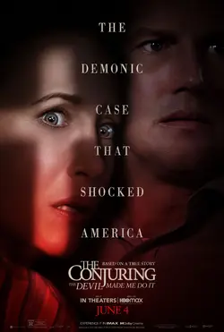

Here you will find all the horror movies. And rated from 1 to 5 ★, being 1 the less and 5 the most rated.
- The Conjuring Universe:
The Conjuring Universe is a series of supernatural horror films, The films present a dramatization of the real-life cases of Ed and Lorraine Warren, paranormal investigators and authors associated with prominent yet controversial cases of haunting.
Know more.
This saga consists of 3 movies currently, the fourth will be released in 2024:- The Conjuring
- The Conjuring 2
- The Conjuring: The Devil Made Me Do It 
- CONJURING 4


Los Warren han tenido numerosos casos durante la década que podrían servir como base para la historia de la próxima película. Dos posibles casos de los archivos de los Warren son el embrujo de House Snedeker y el de la familia Smurl, que los Warren investigaron en la década de 1980.
- ANABELLE
- Annabelle
- Annabelle: Creation
- Annabelle Comes Home